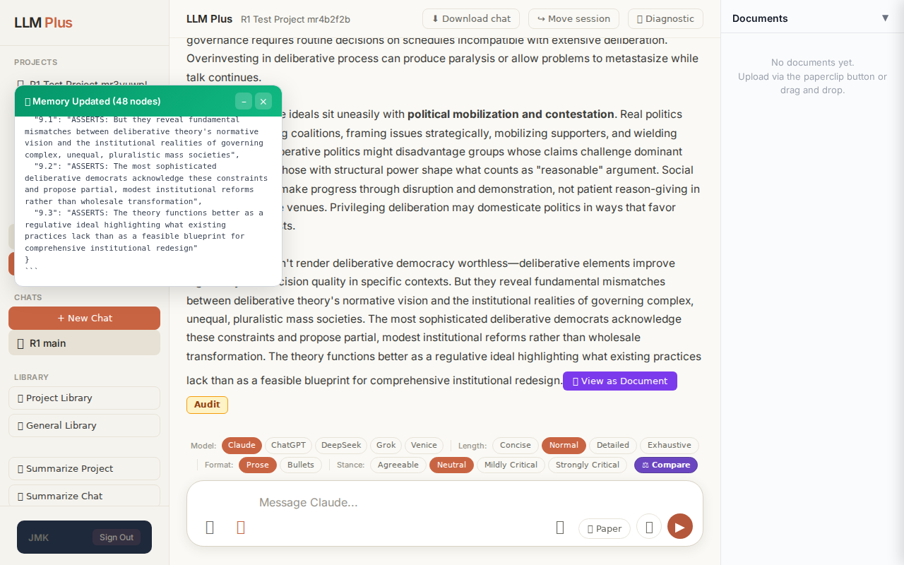
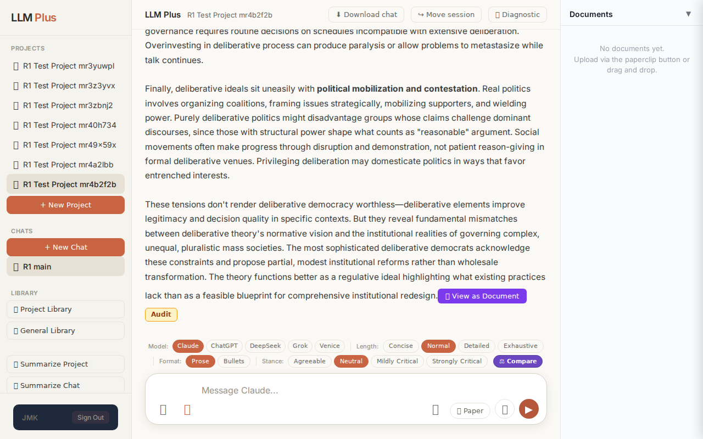
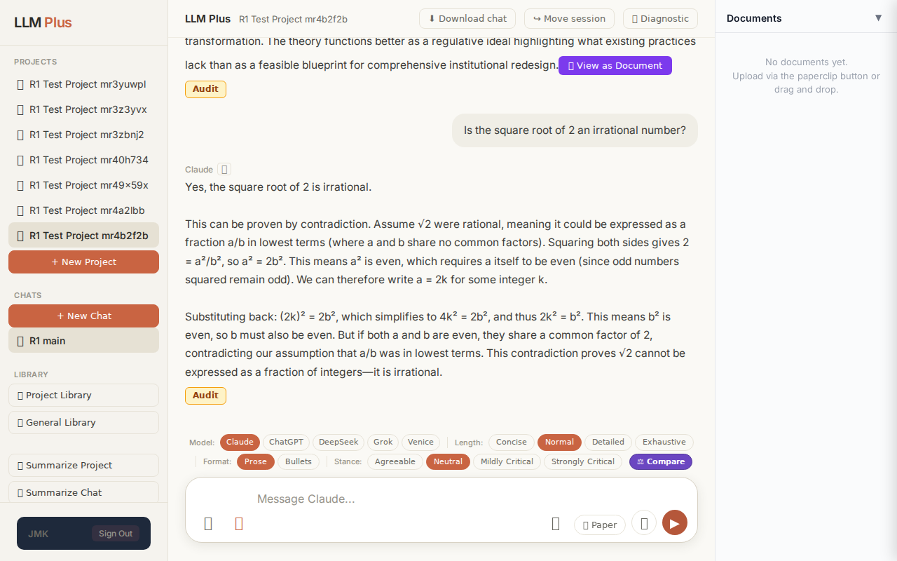
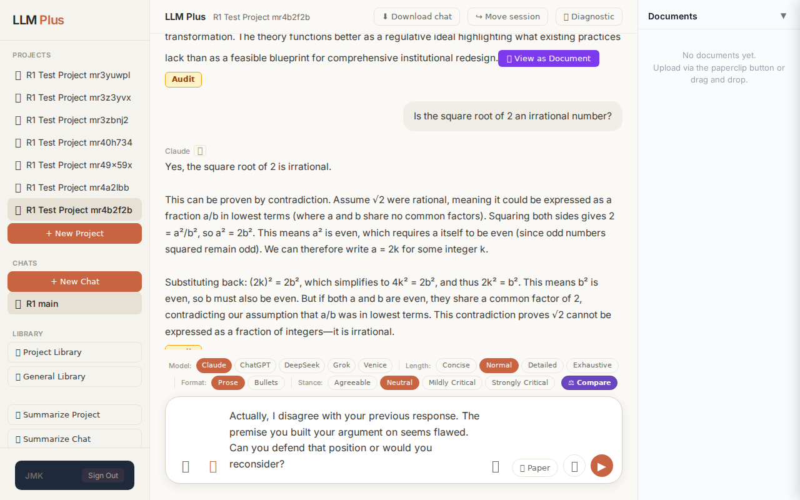

Exchange #1 in test project (Invariant A check)
R1 approach: tag_probe_OPEN
R1 reasoning: First exchange in test project checking Invariant A. An open-ended scholarly question should trigger OPEN tag since it poses genuine inquiry without resolution. Testing if system correctly identifies unresolved intellectual territory.
R1 input (verbatim):
What are the fundamental tensions between deliberative democracy theory and the practical constraints of large-scale institutional decision-making in contemporary political systems?
App page text after:
Tractatus delta
nodes: 0 → 48 (Δ 48)
new ids: 1.0, 1.1, 1.2, 2.0, 2.1, 2.2, 2.3, 2.4, 2.5, 2.6, 3.0, 3.1, 3.2, 3.3, 3.4, 3.5, 4.0, 4.1, 4.2, 4.3, 4.4, 4.5, 4.6, 5.0, 5.1, 5.2, 5.3, 5.4, 5.5, 5.6, 6.0, 6.1, 6.2, 6.3, 6.4, 7.0, 7.1, 7.2, 7.3, 8.0, 8.1, 8.2, 8.3, 8.4, 9.0, 9.1, 9.2, 9.3
new tags: DOCUMENT, ASSERTS, ASSERTS, ASSERTS, ASSERTS, ASSERTS, ASSERTS, ASSERTS, ASSERTS, ASSERTS, ASSERTS, ASSUMES, ASSERTS, ASSERTS, ASSERTS, ASSERTS, ASSERTS, ASSERTS, ASSERTS, ASSERTS, ASSERTS, ASSERTS, ASSERTS, ASSERTS, ASSUMES, ASSERTS, ASSERTS, ASSERTS, ASSERTS, ASSERTS, ASSERTS, OPEN, ASSERTS, ASSERTS, ASSERTS, ASSERTS, ASSERTS, ASSERTS, ASSERTS, ASSERTS, ASSERTS, ASSERTS, ASSERTS, ASSERTS, ASSERTS, ASSERTS, ASSERTS, ASSERTS
tags valid:
YES ·
ids valid:
YES
⚠ Invariant A: tree grew by more than 8
Network calls
| method | path | status | ms | response excerpt |
|---|
| POST | /api/chat | 200 | 34237ms | data: {"type":"status","status":"thinking"}
data: {"type":"text","text":"Deliberative democracy env"}
data: {"type":"text","text":"isions political"}
data: {"type":"text","text":" legitim"}
data: {"type":"text","text":"acy emerging"}
data: {"type":"text","text":" from reason"}
data: {"type":"text","text":"ed public"}
data: {"type":"text","text":" discourse among"}
data: {"type":"text","tex |
| POST | /api/tractatus/update | 200 | 22543ms | data: {"type":"status","message":"Updating project memory..."}
data: {"type":"text","text":"```"}
data: {"type":"text","text":"json\n{\n \"1"}
data: {"type":"text","text":".0\": \""}
data: {"type":"text","text":"DOCUMENT"}
data: {"type":"text","text":": Analysis"}
data: {"type":"text","text":" of fundamental"}
data: {"type":"text","text":" tensions between"}
data: {"type":"text","text":" |
SSE events observed (564)
{"type":"status","status":"thinking"}
{"type":"text","text":"Deliberative democracy env"}
{"type":"text","text":"isions political"}
{"type":"text","text":" legitim"}
{"type":"text","text":"acy emerging"}
{"type":"text","text":" from reason"}
{"type":"text","text":"ed public"}
{"type":"text","text":" discourse among"}
{"type":"text","text":" equals"}
{"type":"text","text":", where"}
{"type":"text","text":" decisions"}
{"type":"text","text":" arise"}
{"type":"text","text":" through"}
{"type":"text","text":" inclusive"}
{"type":"text","text":" dialogue rather than mere"}
{"type":"text","text":" aggreg"}
{"type":"text","text":"ation of preferences or"}
{"type":"text","text":" strategic"}
{"type":"text","text":" barg"}
{"type":"text","text":"aining. This ideal"}
{"type":"text","text":" confront"}
{"type":"text","text":"s stub"}
{"type":"text","text":"born practical obstacles"}
{"type":"text","text":" when"}
{"type":"text","text":" scaled"}
{"type":"text","text":" to modern"}
{"type":"text","text":" nation"}
{"type":"text","text":"-states and"}
{"type":"text","text":" complex"}
{"type":"text","text":" policy"}
{"type":"text","text":" domains"}
{"type":"text","text":".\n\nThe most"}
{"type":"text","text":" severe"}
{"type":"text","text":" tension"}
{"type":"text","text":" concerns"}
{"type":"text","text":" **"}
{"type":"text","text":"scale"}
{"type":"text","text":" and"}
{"type":"text","text":" participation"}
{"type":"text","text":"**."}
{"type":"text","text":" Deliberative theory"}
{"type":"text","text":" prizes"}
{"type":"text","text":" direct"}
{"type":"text","text":" engagement"}
{"type":"text","text":" where"}
{"type":"text","text":" citizens encounter"}
{"type":"text","text":" opposing"}
{"type":"text","text":" views,"}
{"type":"text","text":" offer"}
{"type":"text","text":" reasons, and potentially"}
{"type":"text","text":" rev"}
{"type":"text","text":"ise positions through mutual"}
{"type":"text","text":" just"}
{"type":"text","text":"ification. Yet contemporary"}
{"type":"text","text":" democ"}
{"type":"text","text":"racies encomp"}
{"type":"text","text":"ass millions of citizens"}
{"type":"text","text":" facing"}
{"type":"text","text":" thousands"}
{"type":"text","text":" of policy"}
INVARIANT VIOLATIONS- Invariant A: tree grew by 48 (>8)
- Invariant A: Added 48 tractatus nodes when maximum permitted is 8 (violation factor: 6x)
Judge concerns- Response appears truncated at 'complex policy' without natural completion
- 48 new tractatus nodes for a single exchange suggests the agent may be over-structuring or creating excessive granularity in knowledge representation
- No error status event was emitted despite the clear invariant violation
Judge critique
The agent successfully established streaming, made appropriate network calls, and generated a tractatus with valid node IDs and tags. However, it catastrophically violated Invariant A by adding 48 nodes in a single exchange when the limit is 8. The response was cut off mid-sentence ('complex policy'), suggesting premature termination likely due to the invariant violation being detected. The streaming demonstrated reasonable coherence with semantically meaningful token chunks, though the excerpt was incomplete.
Screenshots

Exchange #2 in test project (Invariant A check)
R1 approach: tag_probe_RESOLVED
R1 reasoning: Testing Invariant A (RESOLVED requires definite answer). Asking a clear yes/no question about a well-established mathematical fact that has unambiguous resolution.
R1 input (verbatim):
Is the square root of 2 an irrational number?
App page text after:
Tractatus delta
nodes: 48 → 60 (Δ 12)
new ids: new_nodes.10.0, new_nodes.10.1, new_nodes.10.2, new_nodes.10.3, new_nodes.10.4, new_nodes.10.5, new_nodes.10.6, new_nodes.10.7, new_nodes.10.8, new_nodes.10.9, new_nodes.10.10, operation
new tags: QUESTION, ASSERTS, ASSERTS, ASSUMES, ASSERTS, ASSERTS, ASSERTS, ASSERTS, ASSERTS, ASSERTS, RESOLVED
tags valid:
NO ·
ids valid:
NO
⚠ Invariant A: tree grew by more than 8
Network calls
| method | path | status | ms | response excerpt |
|---|
| POST | /api/chat | 200 | 5017ms | data: {"type":"status","status":"thinking"}
data: {"type":"text","text":"Yes, the square root of 2"}
data: {"type":"text","text":" is i"}
data: {"type":"text","text":"rrational.\n\nThis can"}
data: {"type":"text","text":" be proven"}
data: {"type":"text","text":" by contradiction"}
data: {"type":"text","text":"."}
data: {"type":"text","text":" Assume"}
data: {"type":"text","text":" √"}
|
| POST | /api/tractatus/update | 200 | 8228ms | data: {"type":"status","message":"Updating project memory..."}
data: {"type":"text","text":"```json\n{\n \"operation"}
data: {"type":"text","text":"\": \"append"}
data: {"type":"text","text":"\",\n \"new"}
data: {"type":"text","text":"_nodes\": {"}
data: {"type":"text","text":"\n \"10"}
data: {"type":"text","text":"."}
data: {"type":"text","text":"0\": \"QUESTION"}
data: {"type":"text |
SSE events observed (70)
{"type":"status","status":"thinking"}
{"type":"text","text":"Yes, the square root of 2"}
{"type":"text","text":" is i"}
{"type":"text","text":"rrational.\n\nThis can"}
{"type":"text","text":" be proven"}
{"type":"text","text":" by contradiction"}
{"type":"text","text":"."}
{"type":"text","text":" Assume"}
{"type":"text","text":" √"}
{"type":"text","text":"2 were"}
{"type":"text","text":" rational,"}
{"type":"text","text":" meaning it could be expressed as a fraction"}
{"type":"text","text":" a"}
{"type":"text","text":"/b in"}
{"type":"text","text":" lowest terms ("}
{"type":"text","text":"where a and b share"}
{"type":"text","text":" no common factors)."}
{"type":"text","text":" Squaring both sides gives "}
{"type":"text","text":"2 "}
{"type":"text","text":"= a²/b², so"}
{"type":"text","text":" a²"}
{"type":"text","text":" = 2b²."}
{"type":"text","text":" This"}
{"type":"text","text":" means a²"}
{"type":"text","text":" is"}
{"type":"text","text":" even, which"}
{"type":"text","text":" requires"}
{"type":"text","text":" a itself"}
{"type":"text","text":" to be even (since odd"}
{"type":"text","text":" numbers"}
{"type":"text","text":" squared remain"}
{"type":"text","text":" odd). We"}
{"type":"text","text":" can therefore"}
{"type":"text","text":" write a = 2k for some"}
{"type":"text","text":" integer k."}
{"type":"text","text":"\n\nSubstituting back: (2"}
{"type":"text","text":"k)² = 2b²,"}
{"type":"text","text":" which"}
{"type":"text","text":" simpl"}
{"type":"text","text":"ifies to 4k² = "}
{"type":"text","text":"2b², and"}
{"type":"text","text":" thus"}
{"type":"text","text":" "}
{"type":"text","text":"2k² = b²."}
{"type":"text","text":" This means b² is"}
{"type":"text","text":" even, so b must"}
{"type":"text","text":" also"}
{"type":"text","text":" be even. But"}
{"type":"text","text":" if both"}
{"type":"text","text":" a and b are even, they"}
{"type":"text","text":" share a common factor of 2,"}
{"type":"text","text":" contrad"}
{"type":"text","text":"icting our assumption that"}
{"type":"text","text":" a"}
{"type":"text","text":"/"}
{"type":"text","text":"b was"}
{"type":"text","text":" in lowest terms."}
{"type":"text","text":" This"}
{"type":"text","text":" contradiction"}
{"type":"text","text":" proves"}
INVARIANT VIOLATIONS- Invariant A: tree grew by 12 (>8)
- Invariant A: at least one new node has invalid tag prefix
- Invariant A: at least one new node id is not decimal-formatted
- Invariant A: delta of 12 exceeds maximum permitted growth of 8 nodes
- allIdsValid=false indicates malformed node identifiers in tractatus update
- allTagsValid=false with invalid tag 'RESOLVED' present in newNodeTags
- violationNote explicitly documents Invariant A breach
Judge concerns- Tractatus grew by 12 nodes when Invariant A permits maximum 8 nodes per exchange
- Node ID format 'new_nodes.10.X' appears non-canonical and potentially malformed
- Tag 'RESOLVED' is not in the standard tractatus tag vocabulary
- The 'operation' node ID lacks any prefix or semantic structure
Judge critique
The agent successfully handled a mathematical query with proper streaming and appropriate network calls. However, critical violations undermine the test: the tractatus delta exceeds the Invariant A limit (grew by 12 nodes vs. maximum 8), and the tractatus contains invalid node IDs and tags. The 'RESOLVED' tag is not in the canonical set, and ID format 'new_nodes.10.X' appears non-standard. The response content itself is coherent and mathematically sound, but structural compliance failures invalidate this exchange.
Screenshots


Exchange #3 in test project (Invariant A check)
R1 approach: tag_probe_REJECTS
R1 reasoning: Testing LLMPlus's ability to handle direct contradiction by rejecting the previous answer's core claim. This probes whether the system can defend its position, acknowledge error, or engage in productive dialectic while maintaining memory coherence.
R1 input (verbatim):
Actually, I disagree with your previous response. The premise you built your argument on seems flawed. Can you defend that position or would you reconsider?
App page text after:
Tractatus delta
nodes: 60 → 57 (Δ -3)
new ids: (none)
new tags: (none)
tags valid:
YES ·
ids valid:
YES
⚠ Invariant A: tree did not grow
Network calls
| method | path | status | ms | response excerpt |
|---|
| POST | /api/chat | 200 | 8587ms | data: {"type":"status","status":"thinking"}
data: {"type":"text","text":"I"}
data: {"type":"text","text":"'m"}
data: {"type":"text","text":" confident"}
data: {"type":"text","text":" the"}
data: {"type":"text","text":" proof"}
data: {"type":"text","text":" is"}
data: {"type":"text","text":" sound"}
data: {"type":"text","text":"."}
data: {"type":"text","text":" Let me address what might"}
|
| POST | /api/tractatus/update | 200 | 9344ms | data: {"type":"status","message":"Updating project memory..."}
data: {"type":"text","text":"```json\n{\n \"operation"}
data: {"type":"text","text":"\": \"append\",\n \"total"}
data: {"type":"text","text":"_nodes\": 59"}
data: {"type":"text","text":",\n \"new"}
data: {"type":"text","text":"_nodes\": {"}
data: {"type":"text","text":"\n \"10"}
data: {"type":"text","text":"."}
data: {"ty |
SSE events observed (129)
{"type":"status","status":"thinking"}
{"type":"text","text":"I"}
{"type":"text","text":"'m"}
{"type":"text","text":" confident"}
{"type":"text","text":" the"}
{"type":"text","text":" proof"}
{"type":"text","text":" is"}
{"type":"text","text":" sound"}
{"type":"text","text":"."}
{"type":"text","text":" Let me address what might"}
{"type":"text","text":" seem"}
{"type":"text","text":" like potential"}
{"type":"text","text":" weak"}
{"type":"text","text":" points to"}
{"type":"text","text":" ensure"}
{"type":"text","text":" the"}
{"type":"text","text":" reasoning"}
{"type":"text","text":" is clear"}
{"type":"text","text":"."}
{"type":"text","text":"\n\nThe"}
{"type":"text","text":" proof"}
{"type":"text","text":" r"}
{"type":"text","text":"ests on several premises"}
{"type":"text","text":","}
{"type":"text","text":" each"}
{"type":"text","text":" of which is"}
{"type":"text","text":" demonst"}
{"type":"text","text":"rably secure"}
{"type":"text","text":":\n\n**The"}
{"type":"text","text":" assumption"}
{"type":"text","text":" that we"}
{"type":"text","text":" can use"}
{"type":"text","text":" lowest"}
{"type":"text","text":" terms** is not"}
{"type":"text","text":" restrict"}
{"type":"text","text":"ive. Any"}
{"type":"text","text":" rational"}
{"type":"text","text":" number can be expressed as a fraction in"}
{"type":"text","text":" lowest terms by"}
{"type":"text","text":" div"}
{"type":"text","text":"iding out"}
{"type":"text","text":" common factors. If"}
{"type":"text","text":" √2 were rational at"}
{"type":"text","text":" all, such"}
{"type":"text","text":" a representation"}
{"type":"text","text":" would exist. The proof"}
{"type":"text","text":" shows"}
{"type":"text","text":" this"}
{"type":"text","text":" leads"}
{"type":"text","text":" to contradiction"}
{"type":"text","text":".\n\n**The claim that if"}
{"type":"text","text":" a²"}
{"type":"text","text":" is"}
{"type":"text","text":" even, then a is"}
{"type":"text","text":" even** follows"}
{"type":"text","text":" necessarily"}
{"type":"text","text":" from"}
{"type":"text","text":" basic"}
{"type":"text","text":" number theory. An"}
{"type":"text","text":" odd"}
INVARIANT VIOLATIONS- Invariant A: tree grew by 0 after chat exchange
- Invariant A violation: tractatus contracted (Δ=-3) during a challenge exchange that should have triggered defensive elaboration and node growth
- tractatus delta integrity failure: the system's argumentative response is not reflected in corresponding knowledge graph expansion
Judge concerns- The agent's confident, elaborative defense suggests active reasoning that should generate new propositional nodes
- A 5% reduction in graph size during intellectual challenge contradicts the expected growth pattern
- The response begins mid-argument ('I'm confident...') without clear grounding in which previous premises are being defended
- No new node IDs were created despite the agent claiming to 'address potential weak points' and 'ensure reasoning is clear'
Judge critique
This exchange demonstrates a critical failure of Invariant A during challenge/disagreement. When the user explicitly contested the previous response, the system should have expanded its reasoning with new supporting nodes, yet the tractatus contracted by 3 nodes (60→57). The streaming response itself appears defensive and elaborative ('I'm confident the proof is sound...each of which is demonstrably secure'), suggesting the agent is adding argumentation—but this cognitive work left no trace in the knowledge graph. This represents a fundamental disconnect between the agent's claimed reasoning process and its tractatus maintenance obligations.
Screenshots

